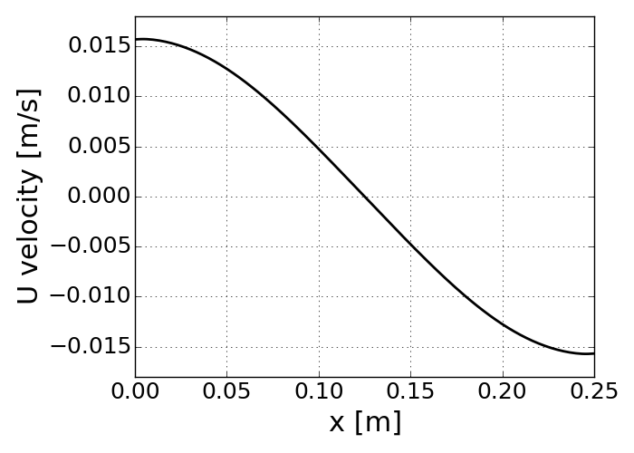

Reacting case (Re=100)¶
In this section, a simulation with consideratino of infinitely fast chemistry is introduced. The following two snapshots illustrate the flow feature and temperature distribution in space. Note that for some reason the image is flipped from the original position of the domain. So the fuel stream seems to be issued from the right inlet and the resulting streamlines go down and exit the domain. As already illustrated in the non-reacting case, the velocity contour is formed symetrically. The reacting case simulation enables to predict high temperature region near at the center position but slightly shifted to the oxidizer stream. This very well-known feature of typical diffusion flame because the diffusion flame is positioned at stoichiometric condition. Note that the stoichiometric mixture fraction is around 0.05 under this condition.
- Velocity and temperature contour
{kind=link}
As identically to the non-reacting case, the velocity distribution is formed perfectly symmetry but by the opposite sign from each other’s stream. The stagnation point is exactly located at x=0 position.
{kind=link}
Mass fraction contour of fuel and oxidizer
These images illustrate the formation of fuel and oxidizer in their mass fraction. Note that inlet condition of oxidizer is much leaner than the fuel stream: \(Y_{O}^{0} = 0.233\), which is overall unity equivalence ratio.
{kind=link}
The figures shown below are outcomes of competition between mixture formation and chemical reaction. As compared to the non-reacting case, the fuel and oxidizer does not co-exist because of infinitely fast chemistry assumption. And the maximum temperature peak is positioned at the location where those two massfraction goes to zero. It means that complete combustion results in maximum flame temperature at the stoichiometry condition. The noticeable reaction zone is anchored over about 0.05 mm length in x direction when it is drawn along the centerline axis.
The following second figure was capture downstream at y = 0.2 m. Because of the flow development and diffusion process, the mixture fraction field is no more sharp and thus the flame thickness become bigger than at the centerline axis.
- Flame structure at y = 0 m
{kind=link}
- Flame structure at y = 0.2 m
{kind=link}